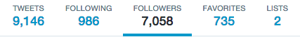
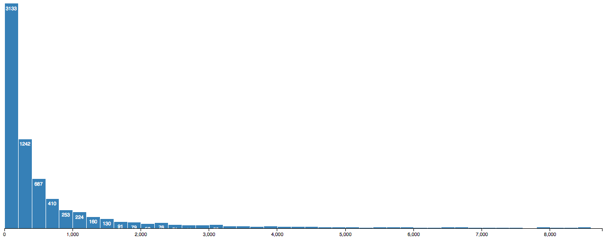

distribution of twitter followers
May 11, 2015
I’m curious about my twitter followers… who are you? how many people do I know who follow me on twitter who don’t tweet at me?
I experimented a bit with the data of my Twitter follower, displaying the distribution as a histogram, grouping my followers by their number of followers. I’ve got some outlier followers with a crazy number of followers themselves, the max is SamsungMobile with 10,592,003 followers. Twitter also claims that HillaryClinton is following me, but her account makes it seem like there are only 16 people she’s following — do famous people get to follow people in secret? or was this some weird glitch in the Twitter API

As of this writing the Twitter UI tells me I have 7,058 followers,
but I seem to have been able to get 7,481 from the API.
Unsurprisingly, my followers have a relatively low median number of followers (281) with a large standard deviation (157,367). The distribution looks a lot like you would expect. Cropping the outliers to make the graph more interesting, here’s just the lower 90%:

Is it just me who wonders about this kind of thing? We have the ability now to connect with so many people, somehow sustaining relationships with more people than we can ever really know in real life or keep in our heads.
For the Coders
To download the data, I used a python twitter collection script (twecoll). Getting the list of my followers, wasn’t clearly documented, but just needed an option I gleaned from the source code:
git clone git@github.com:jdevoo/twecoll.git
./twecoll init ultrasaurus --followers
More data is still downloading…